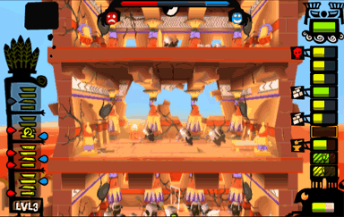
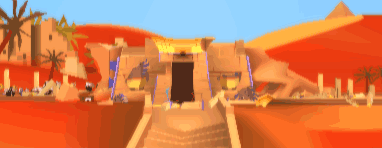

13 |
Destruction |
 |
A Level is destroyed when it has no more health points. To destroy it, you must use your Offensive Powers to strike its Pillars down. When a Level is destroyed, the Human Units run away and the Level crumbles down. The Levels located above then fall down one Level to replace it. Destroying all the Levels is one way to win the game. 
Destroying the Tower’s Foundations is another way to win the game. 
When a Level is destroyed and the Levels above it come crumbling down, these cause damage to the lower Levels, which are crushed under their weight. The extent of the damage depends on the number of Levels that fall. The Tower’s Foundations also take damage. You can deal further damage by arranging for the destruction of one Level to cause the destruction of the Levels below. This is called a "chained destruction". |
 |
 |
 |